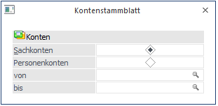
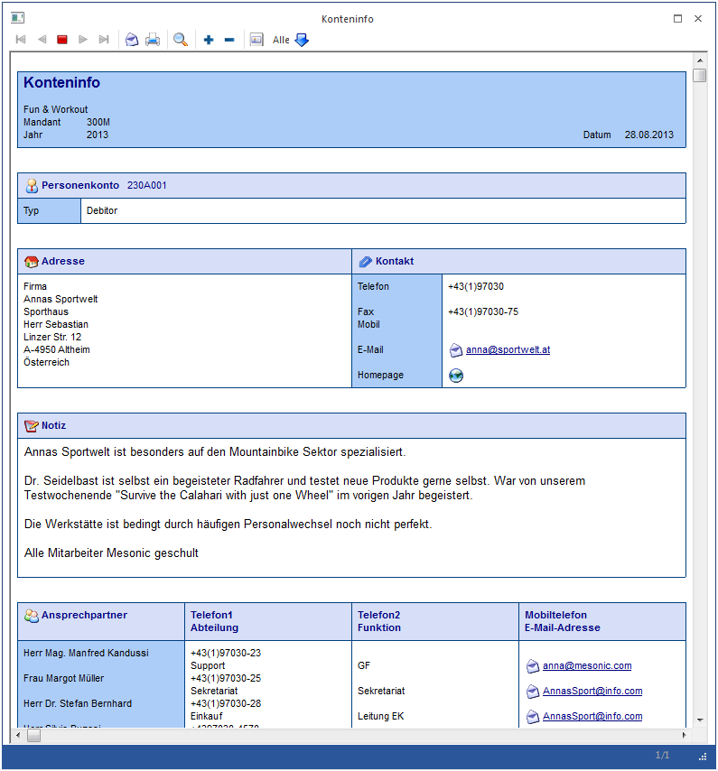

Im Menüpunkt
1 Auswertungen
1 Kontenlisten
1 Kontenstammblatt
können Sie Datenblätter über beliebige Kontenbereiche ausgeben.

Achtung
Die Auswertung kann nur über den Drucker bzw. Spooler erfolgen.
Auf dem Kontenstammblatt werden alle Stammwerte sowie die aktuellen Salden und Budgetwerte angezeigt.
Ø Bereich
Zunächst können Sie entscheiden ob Sachkonten oder Personenkonten ausgewertet werden sollen.
Ø Konto von - bis
Geben Sie das erste und letzte Konto ein, für welches ein Kontenstammblatt ausgegeben werden soll.
Die Auswertung schaut folgendermaßen aus:
